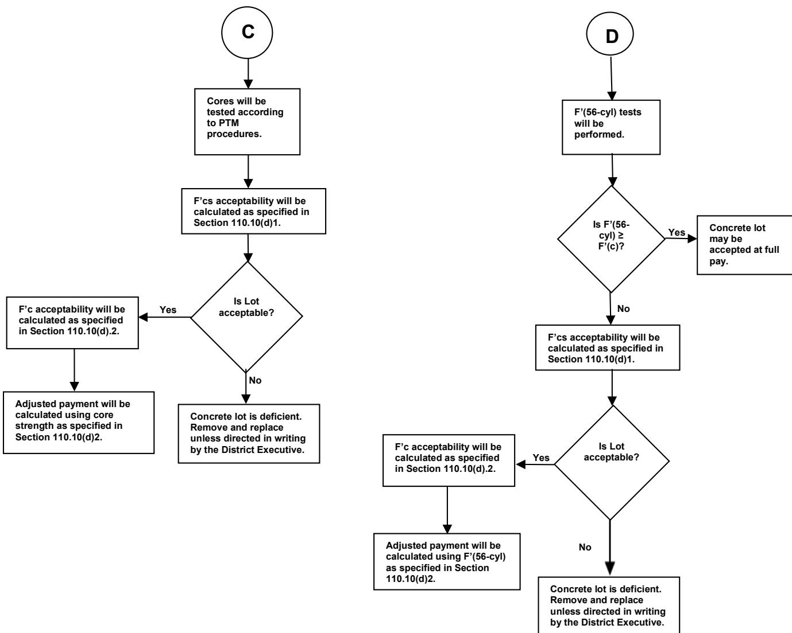

Design Exception
Design Exception is a formal engineering and documentation process that permits an agency to approve a departure from established design standards when the required minimum cross‑slope for new construction, reconstruction, or 3R projects cannot be achieved, or when pavement preservation treatments exceed prescribed limits [1]. The request must be prepared at the point of trigger and follows the procedures in Publications 10X (Appendix P) and 10C, with engineering analysis—often including core sampling, FWD testing, and cost‑effectiveness calculations—to demonstrate that the deviation is justified [1][2]. Approval is granted by the appropriate authority (e.g., HDTS for pavement‑design related exceptions) after the documented justification satisfies defined criteria such as minimum cross‑slope compliance, structural performance, and economic rationale [1].
Purpose and decision context
In section 2.5 (Cross‑Slopes), when the required cross‑slope criteria for new construction, reconstruction, or 3R projects cannot be satisfied, a design exception request must be prepared to obtain approval for deviating from those design requirements so that the project may proceed. In section 12.3 (Design Guidelines), the Design Exception process is used to support the decision to document and approve a departure from the standard pavement‑preservation design guidelines when geometric or bridge issues prevent strict compliance; by following the Design Flexibility procedures in Publication 10C an agency can formally grant an exception after engineering analysis rather than requiring a full pavement design, and pavement‑design related exceptions should be directed to HDTS for the same approval purpose. [1]
[1] — Ch. 2 (p. 60), Ch. 12 (pp. 204–205)
The Design Exception process is invoked when the required minimum cross‑slope for new construction, reconstruction, or 3R projects cannot be achieved, because the finished roadway surface should provide a minimum cross slope as defined in Publication 13, Design Manual Part 2; any inability to meet that criterion triggers the need for a design exception request, which must be prepared according to Publication 10X, Appendix P. The process is also used when a preservation activity cannot satisfy the standard design criteria—such as an overlay on a flexible pavement that exceeds the 2‑inch limit or a project involving geometric or bridge issues—and a documented justification is required for approval; thickness limitations do not include material required for slope correction, and pavement‑design related exceptions should be directed to HDTS while following the documentation and approval procedures described in Publication 10C. [1]
[1] — Ch. 2 (p. 60), Ch. 12 (pp. 204–205)
Scope and applicability
Design Exception is appropriate for new construction, reconstruction, and 3R projects when the required cross‑slope design criteria cannot be satisfied; in that situation a design exception request must be prepared. The guidance applies during the design stage of those project types, while pavement preservation projects follow separate guidance. [1]
[1] — Ch. 2 (p. 60)
Design Exception is only warranted when the required minimum cross‑slope cannot be achieved for new construction, reconstruction, or 3R projects; if the cross‑slope criteria are met, the normal design process should be followed. For pavement preservation projects the source points to separate guidance, implying that a design‑exception request is not the preferred route in those cases. [1]
[1] — Ch. 2 (p. 60)
Information needs
For pavement preservation design exceptions the manual requires detailed condition data such as core samples that are inspected to establish depth and integrity of the existing pavement and Falling Weight Deflectometer testing to verify joint failures. The amount of concrete patching may be performed up to, but not exceeding, 10 % of the total area unless a cost‑effectiveness justification is provided for exceeding that threshold. When milling depths exceed standard limits the required depth is determined from the core results, so cost data must demonstrate that any deviation from the prescribed limits remains economically justified. For low‑strength cement concrete design exceptions the specification requires detailed condition data in the form of compressive‑strength test results from acceptance cylinders or cores (e.g., F′(28‑cyl), F′(56‑cyl) and F′(cores)) to determine whether the concrete meets the specified design strength (F′(c)). Cost information is needed in the form of the Contract Unit Price of the in‑place concrete because if a deficient lot is allowed to remain, the adjusted payment will be exactly 50 % of that CUP. Stakeholder input includes a written request from the contractor to retain the deficient concrete, a signed document waiving any claim for the reduced payment, and an engineering analysis of the deficiency performed at no expense to the Department. No traffic, environmental or site‑specific data are stipulated in this section. [1][2]
The following figure illustrates the evaluation, disposition, and adjusted payment procedures for prestressed concrete beams.

The flowchart is divided into two parallel processes labeled C and D. Process C begins with cores being tested according to PTM procedures, followed by calculating F'cs acceptability as specified in Section 110.10(d)1. A decision asks if the lot is acceptable; a Yes leads to calculating F'c acceptability per Section 110.10(d)2 and adjusting payment using core strength per Section 110.10(d)2, while a No results in the concrete lot being deficient and requiring removal unless directed otherwise by the District Executive.
Process D begins with performing F'(56-cyl) tests. A decision asks if F'(56-cyl) is greater than or equal to F'(c). If Yes, the concrete lot may be accepted at full pay. If No, F'cs acceptability is calculated per Section 110.10(d)1. Another decision asks if the lot is acceptable; a Yes leads to calculating F'c acceptability per Section 110.10(d)2 and adjusting payment using F'(56-cyl) per Section 110.10(d)2, while a No results in the concrete lot being deficient and requiring removal unless directed otherwise by the District Executive.
Text description of this figure
The flowchart is divided into two parallel processes labeled C and D. Process C begins with cores being tested according to PTM procedures, followed by calculating F'cs acceptability as specified in Section 110.10(d)1. A decision asks if the lot is acceptable; a Yes leads to calculating F'c acceptability per Section 110.10(d)2 and adjusting payment using core strength per Section 110.10(d)2, while a No results in the concrete lot being deficient and requiring removal unless directed otherwise by the District Executive.
Process D begins with performing F'(56-cyl) tests. A decision asks if F'(56-cyl) is greater than or equal to F'(c). If Yes, the concrete lot may be accepted at full pay. If No, F'cs acceptability is calculated per Section 110.10(d)1. Another decision asks if the lot is acceptable; a Yes leads to calculating F'c acceptability per Section 110.10(d)2 and adjusting payment using F'(56-cyl) per Section 110.10(d)2, while a No results in the concrete lot being deficient and requiring removal unless directed otherwise by the District Executive.
The figure displays two decision flowcharts, labeled C and D, which outline the procedures for testing cores or cylinders to determine if a concrete lot is acceptable. These diagrams illustrate how low-strength concrete prestress beams are evaluated using compressive strength test results from acceptance cylinders or cores, and how adjusted payment is calculated for deficient lots.
[1] — Ch. 12 (pp. 204–205); [2] — SECTION 100 GENERAL PROVISIONS (pp. 115–122)
Alternatives
When a design exception is evaluated for pavement preservation, the analyst must compare the range of prescribed treatments for both flexible and rigid surfaces, ensuring each meets the depth and cost‑effectiveness thresholds set out in Chapter 12.3; for flexible pavements the alternatives include mill‑and‑overlay (with milling depths that may exceed 1 ½ inches or 2 inches to correct rutting), micro‑surfacing or ultra‑thin bonded wearing courses applied early in the maintenance cycle, cold‑in‑place recycling of base limited to a maximum depth of 4 inches with an asphalt overlay not exceeding 1 ½ inches and a specified scratch‑course weight, and ultra‑thin bonded concrete overlays of up to 2 inches as non‑structural wearing courses. For rigid pavements the options comprise full‑depth concrete patching and joint rehabilitation (subject to FWD verification and generally limited to 10 % of area unless cost‑effective), diamond grinding or micro‑surfacing or ultra‑thin bonded wearing course or thin asphalt overlay with slab stabilization, and prescribed thickness overlays such as 1 ½ inches of Superpave 9.5 mm mix or 2 inches of Superpave 12.5 mm mix on appropriate base layers. Each alternative must be justified with the required engineering data—core sampling for milling depth, FWD testing for joint repair, and cost‑effectiveness analysis—to satisfy the design exception documentation procedures. [1]
[1] — Ch. 12 (pp. 204–205)
Decision criteria
Within the Pavement Policy Manual (Publication 242, Change No. 10) section 12.3 DESIGN GUIDELINES, a design exception for pavement preservation is approved only when the proposed work is shown to be cost‑effective based on PennDOT’s Pavement Management System data; if the percentage of patching or overlay exceeds the listed limits, the exception still must be demonstrated as cost‑effective, and no other decision criteria such as safety, durability, schedule, sustainability, accessibility, performance, or public impact are prescribed [1]. In contrast, the Commonwealth of Pennsylvania Department of Transportation Publication 408/2026 SPECIFICATIONS section SECTION 110—PAYMENT > 110.10 EVALUATION, DISPOSITION, AND ADJUSTED PAYMENT OF LOW STRENGTH CEMENT CONCRETE states that the decision to grant a design exception for low‑strength concrete is driven primarily by structural performance and cost considerations: an engineering analysis must show that the material can meet the minimum compressive strength listed in Table C, and the contractor must accept an adjusted payment equal to exactly 50 % of the contract unit price, with the analysis performed at no expense to the Department; other factors such as durability, schedule, sustainability, accessibility or public impact are not addressed [2].
The table below specifies the payment factors for low strength concrete based on core specimen compressive strength results.
| Average of Compressive Strength Test Results of Core Specimens, F’(cores)* | Payment Factor, A |
|---|---|
| ≥ F'c | 1.00 |
| ≥ F'(cs) + 400 | 0.99 |
| ≥ F'(cs) + 300 | 0.98 |
| ≥ F'(cs) + 200 | 0.96 |
| ≥ F'(cs) + 100 | 0.92 |
Source: Commonwealth of Pennsylvania DEPARTMENT OF TRANSPORTATION Publication 408/2026 SPECIFICATIONS, untitled table, p. 118. [2]
[1] — Ch. 12 (pp. 204–205); [2] — SECTION 100 GENERAL PROVISIONS (pp. 115–122)
The adjusted payment for serviceable beams is computed as follows:
This formula computes the Adjusted Payment for serviceable prestressed concrete beams that fail initial strength acceptance but pass structural review. The payment rises as the difference between cylinder and required strength increases, falls as the gap between 28-day and required strength widens, and rises with higher fabricated beam prices.
| Symbol | Meaning | Unit | Role | Value or range |
|---|---|---|---|---|
| Adjusted Payment | not stated near this formula | output | ||
| (cyl)-(r) | not stated near this formula | input | ||
| not stated near this formula | not stated near this formula | input | ||
| not stated near this formula | not stated near this formula | input |
[2] — PDF p. 123
Origin: not stated in the publication near this formula.
Limits and caveats: not stated in the publication near this formula.
Accuracy: not stated in the publication near this formula.
Worked example: not stated in the publication near this formula. The calculator below computes one.
Calculator: Adjusted payment from strength difference and beam price ([2] PDF p. 123)
Source check
Added by formulas-check 0.1.0 on 2026-10-30.
Checked: the formula as read agrees with the publication's printed line at the sample points; status: confirmed.
Searched 1033 words before and 423 words after the formula.
The publication gives Lot Payment as:
The formula computes the Lot Payment using the Contract unit price per lot and the Overall Lot Pay Factor. As the Contract unit price per lot increases, the Lot Payment rises. Similarly, as the Overall Lot Pay Factor increases, the Lot Payment also rises.
| Symbol | Meaning | Unit | Role | Value or range |
|---|---|---|---|---|
| Lot Payment | not stated near this formula | output | ||
| Contract unit price per lot (unit price times lot quantity) | not stated near this formula | input | ||
| Overall Lot Pay Factor | not stated near this formula | input |
[2] — PDF p. 287
Origin: not stated in the publication near this formula.
Limits and caveats: not stated in the publication near this formula.
Accuracy: not stated in the publication near this formula.
Worked example: not stated in the publication near this formula. The calculator below computes one.
See also:
Calculator: Lot payment from contract unit price and pay factor ([2] PDF p. 287)
Source check
Added by formulas-check 0.1.0 on 2026-10-30.
Checked: the formula as read agrees with the publication's printed line at the sample points; status: confirmed.
Searched 1376 words before and 1415 words after the formula.
Stakeholders and constraints
The ability to obtain a design exception for cross‑slope deficiencies is limited by the minimum cross‑slope criteria set out in Publication 13, Design Manual Part 2, Contextual Roadway Design, Chapters 3 and 4; these criteria apply to new construction, reconstruction, and 3R projects, and any shoulder reconstruction must also satisfy those same requirements together with the provisions of Section 2.6, while superelevations must be verified and corrected if necessary. When the required cross‑slope cannot be achieved under those standards, a design‑exception request must be prepared in accordance with Publication 10X, Appendix P. Design exceptions that involve pavement preservation are constrained by the procedures described in Publication 10C, Design Manual Part 1C, Transportation Engineering Procedures, Chapter 3, Section 3.4.C, which prescribe the documentation and approval steps and require that any pavement‑design related exception be routed to HDTS. For flexible pavements, overlays greater than 2 inches are generally ineligible for consideration as a preservation exception unless a specific allowance applies, and milling depths must be justified by core inspections. For rigid pavements, the allowable overlay depth is limited to 4½ inches when a Superpave 9.5 mm wearing‑course mix is used or to 5 inches when a Superpave 12.5 mm mix is used, and concrete patching may not exceed 10 % of the total area unless cost‑effectiveness can be demonstrated. [1]
[1] — Ch. 2 (p. 60), Ch. 12 (pp. 204–205)
Timing and implementation
The decision to grant a Design Exception should be taken at the point where it is determined that the cross‑slope design criteria cannot be satisfied for new construction, reconstruction, or 3R projects. At that moment a formal design exception request must be prepared before any further work proceeds. [1]
[1] — Ch. 2 (p. 60)
The trigger for a Design Exception occurs when the required cross‑slope criteria defined in Publication 13 for new construction, reconstruction, or 3R projects cannot be satisfied; at that point a design exception request must be prepared. Under the 12.3 DESIGN GUIDELINES, action is also triggered whenever a proposed preservation treatment exceeds the listed limits. For flexible pavements any overlay that exceeds 2 inches, or milling or overlay depths beyond 1 ½ inches or 2 inches may be exceeded unless justified by coring to correct rutting; for rigid pavements any scratch overlay that exceeds 4 ½ inches with a Superpave 9.5 mm mix or 5 inches with a Superpave 12.5 mm mix is not eligible as Pavement Preservation and must follow 3R criteria, and any concrete patching that exceeds 10% of the total pavement area is not eligible unless it can be shown that exceeding 10% is cost effective. Additionally, geometric or bridge issues that fall outside these guidelines must follow the documentation procedures in Publication 10C, while pavement‑design related exceptions are directed to HDTS. [1]
[1] — Ch. 2 (p. 60), Ch. 12 (pp. 204–205)
Reference tables
The table below specifies the minimum concrete compressive strength requirements for various classes and uses. It relates to the section Decision criteria.
| Class ofConcrete | Use | Minimum F'(cs)(psi) |
|---|---|---|
| AAAP | Bridge Deck | 3,500 |
| AAA | Other | 3,500 |
| AA | Paving | 3,000 |
| H.E.S. | Paving | 3,000 |
| AA | Structures and Misc. | 3,000 |
| A | 2,500 | |
| C | 2,000 | |
| H.E.S. | 3,000 |
Source: Commonwealth of Pennsylvania DEPARTMENT OF TRANSPORTATION Publication 408/2026 SPECIFICATIONS, untitled table, p. 116. [2]
References
- Pennsylvania Department of Transportation, "Pavement Policy Manual," Publication 242, May 2015 Edition, Change No. 10, 2025. [Online]. Available: https://www.pa.gov/content/dam/copapwp-pagov/en/penndot/documents/public/pubsforms/publications/pub-242/pub%20242%20change%2010.pdf
- Pennsylvania Department of Transportation, "Publication 408/2026 Specifications," Change No. 1, 2026. [Online]. Available: https://www.pa.gov/content/dam/copapwp-pagov/en/penndot/documents/public/pubsforms/publications/pub_408/408_2026/408_2026_1/408_2026_1.pdf